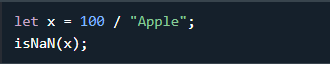
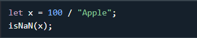
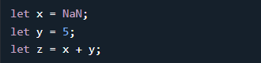
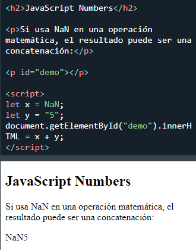

JavaScript tiene un solo tipo de número. Los números se pueden escribir con o sin decimales.
Los números extra grandes o extra pequeños se pueden escribir con notación científica (exponente):
A diferencia de muchos otros lenguajes de programación, JavaScript no define diferentes tipos de números, como enteros, cortos, largos, de coma flotante, etc.
Los números de JavaScript siempre se almacenan como números de punto flotante de doble precisión, siguiendo el estándar internacional IEEE 754.
Este formato almacena números en 64 bits, donde el número (la fracción) se almacena en los bits 0 a 51, el exponente en los bits 52 a 62 y el signo en el bit 63:
| Valor Fracción/Mantisa | Exponente | Señal |
|---|---|---|
| 52 bits (0 - 51) | 11 bits (52 - 62) | 1 bit (63) |
Los números enteros (números sin notación de punto o exponente) tienen una precisión de hasta 15 dígitos:
El número máximo de decimales es 17.
La aritmética de punto flotante no siempre es 100% precisa:
Para resolver el problema anterior, es útil multiplicar y dividir:
ADVERTENCIA !!
JavaScript usa el operador + tanto para la suma como para la concatenación.
Se agregan números. Las cadenas se concatenan.
Si sumas dos números, el resultado será un número:
Si suma dos cadenas, el resultado será una concatenación de cadenas:
Si suma un número y una cadena, el resultado será una concatenación de cadenas:
Si suma una cadena y un número, el resultado será una concatenación de cadenas:
Un error común es esperar que este resultado sea 30:
Un error común es esperar que este resultado sea 102030:

Siempre que se suma un elemento con comillas con otro se concatenará en una cadena
Las cadenas de JavaScript pueden tener contenido numérico:
JavaScript intentará convertir cadenas en números en todas las operaciones numéricas:
Todo esto funcionará:
Pero esto NO:
NaN es una palabra reservada de JavaScript que indica que un número no es un número legal.
Intentar hacer aritmética con una cadena no numérica dará como resultado NaN (No es un número):

Sin embargo, si la cadena contiene un valor numérico, el resultado será un número:

Puede usar la función global de JavaScript isNaN() para averiguar si un valor no es un número:
 

Cuidado!: Si utiliza NaN en una operación matemática, el resultado también será NaN :
O el resultado podría ser una concatenación como NaN5:
Para typeof : NaN es un numero:

Infinity (o -Infinity ) es el valor que JavaScript devolverá si calcula un número fuera del número más grande posible.
La división por 0 (cero) también genera Infinity
Infinity es un número: typeof Infinity devuelve number.
JavaScript interpreta las constantes numéricas como hexadecimales si están precedidas por 0x.

Nunca escriba un número con un cero a la izquierda (como 07).
Algunas versiones de JavaScript interpretan los números como octales si se escriben con un cero inicial.
De forma predeterminada, JavaScript muestra los números como decimales en base 10 .
Pero puede usar el método toString() para generar números desde la base 2 hasta la base 36 .
El hexadecimal es base 16 . El decimal es base 10 . Octal es base 8 . El binario es base 2 .
Normalmente, los números de JavaScript son valores primitivos creados a partir de literales:
Pero los números también se pueden definir como objetos con la palabra clave new:
No cree objetos numéricos.
La palabra clave new complica el código y ralentiza la velocidad de ejecución.
Los objetos numéricos pueden producir resultados inesperados:
Cuando se usa el operador ==, (x , y) son iguales :

Cuando se usa el operador ===, (x , y) no son iguales :

Tenga en cuenta la diferencia entre (x==y )y ( x===y ).
(x == y) ¿verdadero o falso?

La comparación de dos objetos de JavaScript siempre devuelve falso.
Para obtener una referencia de número completa, visite:
Referencia completa de números de JavaScript .La referencia contiene descripciones y ejemplos de todas las propiedades y métodos de Number.